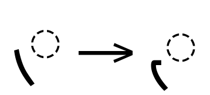
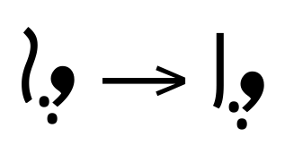
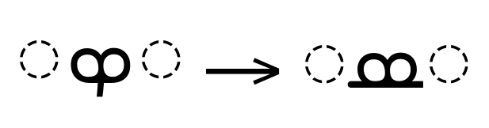
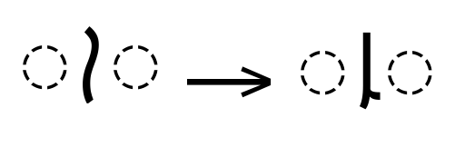
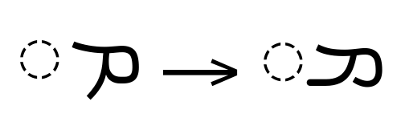
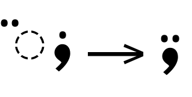
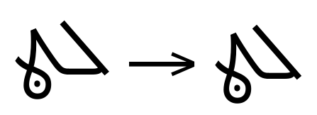
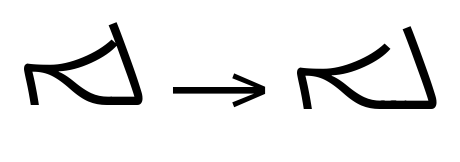
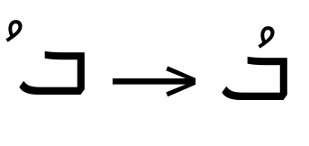

Syriac script shaping in OpenType¶
This document details the general shaping procedure shared by all Syriac script styles, and defines the common pieces that style-specific implementations share.
Table of Contents
The
<syrc>shaping model
General information¶
The Syriac script is used to write multiple languages, most commonly Classical Syriac and multiple dialects of Aramaic. In addition, historical texts use Syriac to write Arabic, Malayalam, Turkish, Kurdish, and Armenian.
The Syriac script encompasses multiple distinct styles, including ʾEsṭrangēlā (classical), Maḏnḥāyā (Eastern), and Serṭā (Western), that share a number of common features and rules, but that differ considerably in their final appearance. Due to the common features found between the styles, a shaping engine can support all styles of Syriac with a single shaping model.
In OpenType, Syriac shaping shares most of the same features that are defined for Arabic and related scripts, but with a few Syriac-specific additions. Therefore, shaping engines are advised to support Syriac and Arabic using the same shaping model.
Syriac is a joining script that uses inter-word spaces, so each codepoint in a text run may be substituted with one of several contextual forms corresponding to what, if any, characters appear before and after the codepoint. Most, but not all, letter sequences join; shaping engines must track which positions trigger joining behavior for each letter.
Syriac is written (and, therefore, rendered) from right to left. Shaping engines must track the directionality of the text run when scripts of different direction are mixed.
Terminology¶
OpenType shaping uses a standard set of terms for elements of the Syriac script. The terms used colloquially in any particular language may vary, however, potentially causing confusion.
Base glyph or character is the standard term for a Syriac character that is capable of taking a diacritical mark.
All of the base characters in Syriac are consonants by definition, but several of these consonants are also used to represent vowels as base characters in certain circumstances.
Vowels that are not base characters are frequently omitted from the text run entirely. Alternatively, such a vowel may appear as a diacritical mark in the Maḏnḥāyā and Serṭā script styles. The standard term for these marks is vowel points.
Kashida (or tatweel) is the term for a glyph inserted into a sequence for the purpose of elongating the baseline stroke of a letter. Unicode documents use the term “tatweel” most frequently, while OpenType documents use the term “kashida” most frequently. Kashidas are typically inserted in order to justify lines of text.
Majlīyānā is the name for the diacritical mark that is attached to a native Syriac letter in order to change it to a foreign loan letter.
Syāmē is the name for the diacritical mark that is used to indicate the pluralization of a word.
The Syriac Abbreviation Mark is a Unicode control character used to trigger the addition of an overline glyph that may span the length of multiple letters. The Syriac Abbreviation Mark is often used to denote the elision of letters from a word; it can also be used to denote that a sequence of letters represents a number rather than a word.
Glyph classification¶
Because Syriac is a joining (or cursive) script, proper shaping of text runs involves identifying the joining behavior of each character, then combining that information with any preceding or subsequent characters to determine the contextually correct form for display.
Joining properties¶
Syriac characters are assigned a JOINING_TYPE property in the
Unicode standard that indicates how they join to adjacent
characters. There are six possible values:
JOINING_TYPE_LEFTindicates that a character joins with the subsequent character, but does not join with the preceding character.JOINING_TYPE_RIGHTindicates that a character joins with the preceding character, but does not join with the subsequent character.JOINING_TYPE_DUALindicates that a character joins with the preceding character and joins with the subsequent character.JOINING_TYPE_NON_JOININGindicates that a character does not join with the preceding or with the subsequent character.JOINING_TYPE_TRANSPARENTindicates that the character does not join with adjacent characters and that the character must be skipped over when the shaping engine is evaluating the joining positions in a sequence of characters. When aJOINING_TYPE_TRANSPARENTcharacter is encountered in a sequence, theJOINING_TYPEof the preceding character passes through. Diacritical marks are frequently assigned this value.JOINING_TYPE_JOIN_CAUSINGindicates that the character forces the use of joining forms with the preceding and subsequent characters. Kashidas and the Zero Width Joiner (U+200D) are bothJOIN_CAUSINGcharacters.
Syriac letters are also assigned to a JOINING_GROUP that indicates
which fundamental character they behave like with regard to joining
behavior. Each of the basic letters in the Syriac block tends to
belong to its own JOINING_GROUP, while extended letters are often
assigned to the JOINING_GROUP that corresponds to the character’s
base letter.
For example, the letter “Persian Bheth” is rendered as the base Syriac
“Beth” with an additional stroke at the top. Therefore, it is assigned
to the BETH joining group.
In addition to the standard joining types, <syrc> text features two
JOINING_GROUPs that trigger special behavior: ALAPH and
DALATH_RISH.
The fin2, fin3, and med2 GSUB features implement Syriac-specific
shaping rules that affect glyphs in the ALAPH joining group, based
on the preceding glyph.
fin2andfin3substitute special terminal forms ofALAPHglyphs, depending on whether or not the preceding character belongs to theDALATH_RISHjoining group.med2substitutes special medial forms ofALAPHglyphs, depending on whether or not the preceding character is left-joining (that is, belonging to theDUAL,LEFT, orJOIN_CAUSINGJOINING_GROUPs.)
The DALATH_RISH joining group includes the standard letters “Dalath”
and “Rish” as well as the “Dotless Dalath-Rish”, an ambiguous letter
that is used in Old Syriac text, when neither the “Dalath” and “Rish”
letters featured a dot, and may also be used in transcribing
historical documents where it is impossible to distinguish whether the
letter in the source text is “Dalath” or “Rish”.
Shaping engines may choose to define pseudo-JOINING_TYPEs
corresponding to the ALAPH and DALATH_RISH joining groups, or may
track the appropriate JOINING_GROUP properties by any other means
preferred.
Mark classification¶
The Unicode standard defines a canonical combining class for each codepoint that is used whenever a sequence needs to be sorted into canonical order.
Several of the Syriac marks belong to standard combining classes:
Codepoint |
Combining class |
Glyph |
|---|---|---|
|
36 |
ܑ Superscript Alaph |
220 |
Other below-base combining marks |
|
230 |
Other above-base combining marks |
The numeric values of these combining classes are used during Unicode normalization.
These classifications are used in the mark-transient-reordering stage.
Character tables¶
Separate character tables are provided for the Syriac and Syriac
Supplement Unicode blocks, as well as for other miscellaneous
characters that are used in <syrc> text runs:
The tables list each codepoint along with its Unicode general category and its joining type. For letters, the table lists the codepoint’s joining group. For diacritical marks, the table lists the codepoint’s mark combining class. The codepoint’s Unicode name and an example glyph are also provided.
For example:
Codepoint |
Unicode category |
Joining type |
Joining group |
Mark class |
Glyph |
|---|---|---|---|---|---|
|
Letter |
DUAL |
BETH |
null |
ܒ Beth |
|
Mark [Mn] |
TRANSPARENT |
null |
220 |
ܷ Rbasa Below |
Codepoints with no assigned meaning are designated as unassigned in the Unicode category column.
Special-function codepoints¶
Other important characters that may be encountered when shaping runs
of Syriac text include the dotted-circle placeholder (U+25CC), the
combining grapheme joiner (U+034F), the zero-width joiner (U+200D)
and zero-width non-joiner (U+200C), the left-to-right text marker
(U+200E) and right-to-left text marker (U+200F), and the no-break
space (U+00A0).
Each of these is of particular importance to shaping engines, because these codepoints interact with the shaping engine, the text run, and the active font, either to mediate non-default shaping behavior or to relay information about the current shaping process.
The dotted-circle placeholder is frequently used when displaying a combining mark in isolation. Real-world text syllables may also use other characters, such as hyphens or dashes, in a similar placeholder fashion; shaping engines should cope with this situation gracefully.
Dotted-circle placeholder characters (like any Unicode codepoint) can appear anywhere in text input sequences and should be rendered normally. GPOS positioning lookups should attach mark glyphs to dotted circles as they would to other non-mark characters. As visible glyphs, dotted circles can also be involved in GSUB substitutions.
In addition to the default input-text handling process, shaping engines may also insert dotted-circle placeholders into the text sequence. Dotted-circle insertions are required when a non-spacing mark or dependent sign is formed with no base character present.
This requirement covers:
Dependent signs that are assigned their own individual Unicode codepoints (such as most dependent-vowel marks or matras)
Dependent signs that are formed only by specific sequences of other codepoints (which is not common in Syriac but can occur in other scripts)
In addition, Syriac text runs may include the “tatweel” or kashida
(U+0640) and “shadda” (U+0651) codepoints from the Arabic block,
because the Syriac block does not encode a separate kashida or shadda
character.
Modern texts may also make use of Arabic punctuation marks, and texts using Syriac to write Arabic (called “Garshuni”) may also employ Arabic ḥarakah (vowel) marks.
The combining grapheme joiner (CGJ) is primarily used to alter the order in which adjacent marks are positioned during the mark-reordering stage, in order to adhere to the needs of a non-default language orthography.
By default, OpenType shaping reorders sequences of adjacent marks by sorting the sequence on the marks’ Canonical_Combining_Class (Ccc) values. The presence of a CGJ character within a sequence of marks has the effect of splitting the sequence into two sequences of marks and, therefore, halting any mark-reordering that would have occurred between the marks on either side of the CGJ.
The zero-width joiner (ZWJ) is primarily used to force the usage of the cursive connecting form of a letter even when the context of the adjoining letters would not trigger the connecting form.
For example, to show the initial form of a letter in isolation (such as for displaying it in a table of forms), the sequence “Letter,ZWJ” would be used. To show the medial form of a letter in isolation, the sequence “ZWJ,Letter,ZWJ” would be used.
The zero-width non-joiner (ZWNJ) is primarily used to prevent a cursive connection between two adjacent characters that would, under normal circumstances, form a join.
The ZWJ and ZWNJ characters are, by definition, non-printing control characters and have the Default_Ignorable property in the Unicode Character Database. In standard text-display scenarios, their function is to signal a request from the user to the shaping engine for some particular non-default behavior. As such, they are not rendered visually.
Note: Naturally, there are special circumstances where a user or document might need to request that a ZWJ or ZWNJ be rendered visually, such as when illustrating the OpenType shaping process, or displaying Unicode tables.
Because the ZWJ and ZWNJ are non-printing control characters, they can be ignored by any portion of a software text-handling stack not involved in the shaping operations that the ZWJ and ZWNJ are designed to interface with. For example, spell-checking or collation functions will typically ignore ZWJ and ZWNJ.
Similarly, the ZWJ and ZWNJ should be ignored by the shaping engine when matching sequences of codepoints against the backtrack and lookahead sequences of a font’s GSUB or GPOS lookups.
The right-to-left mark (RLM) and left-to-right mark (LRM) are used by the Unicode bidirectionality algorithm (BiDi) to indicate the points in a text run at which the writing direction changes. Generally speaking RLM and LRM codepoints do not interact with shaping.
The no-break space is primarily used to display those codepoints that are defined as non-spacing (such as vowel points or diacritical marks) in an isolated context, as an alternative to displaying them superimposed on the dotted-circle placeholder.
The <syrc> shaping model¶
Processing a run of <syrc> text involves seven top-level stages:
Transient reordering of modifier combining marks
Compound character composition and decomposition
Computing letter joining states
Applying the
stchfeatureApplying the language-form substitution features from GSUB
Applying the typographic-form substitution features from GSUB
Applying the positioning features from GPOS
1. Transient reordering of modifier combining marks¶
Note: The following algorithm contains steps specific to reordering Arabic marks. Since Garshuni text, which uses the Syriac script to write the Arabic language, employs Arabic marks, shaping engines should not omit the mark-reordering logic.
Sequences of adjacent marks must be reordered so that they appear in the appropriate visual order before the mark-to-base and mark-to-mark positioning features from GPOS can be correctly applied.
In particular, those marks that have strong affinity to the base character must be placed closest to the base.
This mark-reordering operation is distinct from the standard,
cross-script mark-reordering performed during Unicode
normalization. The standard Unicode mark-reordering algorithm is based
on comparing the Canonical_Combining_Class (Ccc) properties of mark
codepoints, whereas this script-specific reordering utilizes the
Modifier_Combining_Mark (MCM) subclasses specified in the
character tables.
The algorithm for reordering a sequence of marks is:
First, move any “Shadda” (combining class
33) characters to the beginning of the mark sequence.Second, move any subsequence of combining-class-
230characters that begins with a230_MCMcharacter to the beginning of the sequence, before all “Shadda” characters. The subsequence must be moved as a group.Finally, move any subsequence of combining-class-
220characters that begins with a220_MCMcharacter to the beginning of the sequence, before all “Shadda” characters and before all class-230characters. The subsequence must be moved as a group.
Note: Unicode describes this mark-reordering operation, the Arabic Mark Transient Reordering Algorithm (AMTRA), in Technical Report 53, which describes it in terms that are distinct from standard, Ccc-based mark reordering.
Specifically, AMTRA is designated as an operation performed during text rendering only, which therefore does not impact other Unicode-compliance issues such as allowable input sequences or text encoding.
However, shaping engines may choose to perform the reordering of modifier combining marks in conjunction with their Unicode normalization functionality for increased efficiency.
2. Compound character composition and decomposition¶
The ccmp feature allows a font to substitute
mark-and-base sequences with a pre-composed glyph including both the mark and the base (as is done in with a ligature substitution)
individual compound glyphs with the equivalent sequence of decomposed glyphs (such as decomposing a letter with Majlīyānā or other marks into a separate fundamental-letter glyph followed by a mark-only glyph, to permit more precise positioning)
If present, these composition and decomposition substitutions must be
performed before applying any other GSUB or GPOS lookups, because
those lookups may be written to match only the ccmp-substituted
glyphs.
3. Computing letter joining states¶
In order to correctly apply the initial, medial, and final form substitutions from GSUB during stage 6, the shaping engine must tag every letter for possible application of the appropriate feature.
To determine which feature is appropriate, the shaping engine must
examine each word in turn and compute each letter’s joining state from
the letter’s JOINING_TYPE and the JOINING_TYPE of the
preceding character (if any).
Note: Although Syriac uses inter-word spaces, the
initfeature does not refer to word-initial letters only and thefinafeature does not refer to word-final letters only.Rather, both of these terms are defined with respect to whether or not the preceding and subsequent letters form joins with the current letter. The letters at word boundaries will, naturally, take on initial and final forms, but initial and final forms of letters also occur regularly within words, when the letter in question is adjacent to a letter than does not form joins.
This computation starts from the first letter of the word, temporarily
tagging the letter for isol substitution. If the first
letter is the only letter in the word, the isol tag will remain unchanged.
From here, the algorithm consumes each character in the string, one at a time, keeping track of the JOINING_TYPE of the previous character.
If the current character is JOINING_TYPE_TRANSPARENT, move on to the next character but preserve the currently-tracked JOINING_TYPE at its previous state.
If the preceding character’s JOINING_TYPE is LEFT, DUAL, or JOIN_CAUSING:
In
<syrc>text, if the current character is “Alaph”, tag the current character formed2, then update the tag for the preceding character:isolbecomesinitfinabecomesmediinitremainsinitmediremainsmedi
If the current character’s JOINING_TYPE is RIGHT, DUAL, or JOIN_CAUSING, tag the current character for
fina, then update the tag for the preceding character:isolbecomesinitfinabecomesmediinitremainsinitmediremainsmedi
Otherwise, tag the current character for isol.
After testing the final character of the word, if the text is in <syrc> and
if the last character that is not JOINING_TYPE_TRANSPARENT or
JOINING_TYPE_NON_JOINING is “Alaph”, perform an additional test:
If the preceding character is JOINING_TYPE_LEFT, tag the current character for
finaIf the preceding character’s JOINING_GROUP is DALATH_RISH, tag the current character for
fin3Otherwise, tag the current character for
fin2
Once the last character of the word has been processed, proceed to the next word and repeat the algorithm, starting at the beginning of the next word.
Note: Because the processing of the characters in the algorithm described above is deterministic, shaping engines may choose to implement the joining-state computation as a state machine, in a lookup table, or by any other means desirable.
At the end of this process, all letters should be tagged for possible
substitution by one of the isol, init, medi, med2, fina, fin2, or
fin3 features.
4. Applying the stch feature¶
The stch feature decomposes and stretches special marks that are
meant to extend to the full width of words to which they are
attached. It was defined for use in <syrc> text runs for the “Syriac
Abbreviation Mark” (U+070F) but it can be used with similar marks in
other scripts.
To apply the stch feature, the shaping engine should first decompose the
U+070F glyph into components, which results in a beginning point,
midpoint, and endpoint glyphs plus one (or more) extension glyphs: at
least one extension between the beginning and midpoint glyphs and at
least one extension between the midpoint and endpoint glyphs.
The shaping engine must then calculate the total length of the word to which the mark applies. That length, minus the advance widths of the beginning, middle, and endpoint glyphs of the mark, must be divided by two.
The result, divided by the advance width of the extension glyph and rounded up to the next integer, tells the shaping engine how many copies of the extension glyph must be placed between the midpoint and each end of the mark.
Following this procedure ensures that the same number of extensions is used on each side of the mark so that it remains symmetrical.
Finally, the decomposed mark must be reordered as follows:
All of the glyphs in the sequence for the mark, except for the final glyph, are repositioned as a group so that they precede the word to which the mark is attached.
The final glyph in the mark sequence is repositioned to the end of the word.
5. Applying the language-form substitution features from GSUB¶
The language-substitution phase applies mandatory substitution features using the rules in the font’s GSUB table. In preparation for this stage, glyph sequences should be tagged for possible application of GSUB features.
The order in which these substitutions must be performed is fixed for all scripts implemented in the Arabic shaping model:
locl
isol
fina
fin2
fin3
medi
med2
init
rlig
rclt (not used in Syriac)
calt
5.1 locl¶
The locl feature replaces default glyphs with any language-specific
variants, based on examining the language setting of the text run.
Note: Strictly speaking, the use of localized-form substitutions is not part of the shaping process, but of the localization process, and could take place at an earlier point while handling the text run. However, shaping engines are expected to complete the application of the
loclfeature before applying the subsequent GSUB substitutions in the following steps.
5.2 isol¶
The isol feature substitutes the default glyph for a codepoint with
the isolated form of the letter.
Note: It is common for a font to use the isolated form of a letter as the default, in which case the
isolfeature would apply no substitutions. However, this is only a convention, and the active font may use other forms as the default glyphs for any or all codepoints.
5.3 fina¶
The fina feature substitutes the default glyph for a codepoint with
the terminal (or final) form of the letter.

5.4 fin2¶
The fin2 feature replaces word-final Alaph glyph that are not
preceded by Dalath, Rish, or dotless Dalath-Rish with a special
terminal form.
5.5 fin3¶
The fin3 feature replaces word-final Alaph glyph that are
preceded by Dalath, Rish, or dotless Dalath-Rish with a special
terminal form.

5.6 medi¶
The medi feature substitutes the default glyph for a codepoint with
the medial form of the letter.

5.7 med2¶
The med2 feature replaces Alaph glyphs in the middle of a
word that are preceded by a base character that cannot be joined to
with a special medial form.

5.8 init¶
The init feature substitutes the default glyph for a codepoint with
the initial form of the letter.

5.9 rlig¶
The rlig feature substitutes glyph sequences with mandatory
ligatures. Substitutions made by rlig cannot be disabled by
application-level user interfaces.

5.10 rclt¶
This feature is not used in <syrc> text.
5.11 calt¶
The calt feature substitutes glyphs with contextual alternate
forms. In general, this involves replacing the default form of a
connecting glyph with an alternate that provides a preferable
connection to an adjacent glyph.
The substitutions made by calt
can be disabled by application-level user interfaces.

6. Applying the typographic-form substitution features from GSUB¶
The typographic-substitution phase applies optional substitution features using the rules in the font’s GSUB table.
The order in which these substitutions must be performed is fixed for all scripts implemented in the Arabic shaping model:
liga
dlig
cswh (not used in Syriac)
mset (not used in Syriac)
6.1 liga¶
The liga feature substitutes standard, optional ligatures that are on
by default. Substitutions made by liga may be disabled by
application-level user interfaces.

6.2 dlig¶
The dlig feature substitutes additional optional ligatures that are
off by default. Substitutions made by dlig may be disabled by
application-level user interfaces.
6.3 cswh¶
This feature is not used in <syrc> text.
6.4 mset¶
This feature is not used in <syrc> text.
7. Applying the positioning features from GPOS¶
The positioning stage adjusts the positions of mark and base glyphs.
The order in which these features are applied is fixed for all scripts implemented in the Arabic shaping model:
curs (not used in Syriac)
kern
mark
mkmk
7.1 curs¶
This feature is not used in <syrc> text.
7.2 kern¶
The kern adjusts glyph spacing between pairs of adjacent glyphs.
7.3 mark¶
The mark feature positions marks with respect to base glyphs.

7.4 mkmk¶
The mkmk feature positions marks with respect to preceding marks,
providing proper positioning for sequences of marks that attach to the
same base glyph.